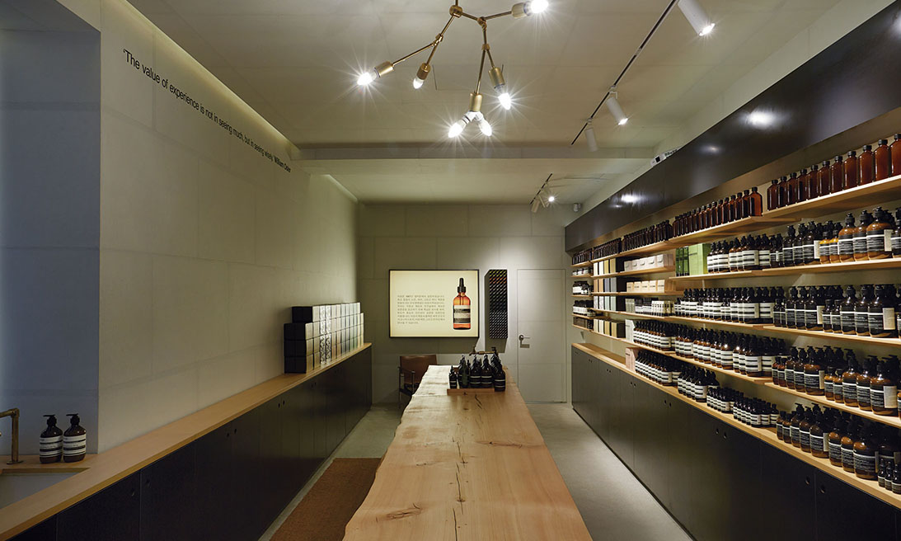

가로수길

다양한 부티크, 갤러리, 카페가 즐비한 서울의 문화거리 가로수길. 바로 이곳에 한국 첫 비솝 스토어가 오픈했습니다. ‘가로수길’은 나무가
줄지어 심어져 있는 도로라는 뜻으로, 매년 가을이면 노랗게 물드는 은행나무 덕분에 지어진 이름입니다.
이번 스토어 설계와 디자인을 맡은 한국 건축사무소 와이즈 건축(WISE Architecture)은 심플함을 강조한 형태를 주로 사용하여
길고 좁은 스토어를 디자인했고 , 음영의 미를 부각시키기 위해 다양한 질감과 대비되는 색조를 활용했습니다.
비솝 매디슨 애비뉴 스토어는 뉴욕 어퍼 이스트 사이드(Upper East Side) 80가와 81가 사이의 공원 근처에 자리잡고 있습니다.
재클린 케네디 오나시스 저수지와 메트로폴리탄 뮤지엄이 가까이에 있으며, 여름에는 공원에서 열리는 셰익스피어의 연극을 보러 가기에도
좋은 위치입니다. 아키텍처 아웃핏(Architecture Outfit)과의 콜라보레이션 작품인 매디슨 애비뉴 스토어는 장소의 특성을 완벽하게
살리는 건축의 전형을 보여줍니다. 과거 신발수선가게가 있었던 이곳을 레노베이션 하는 과정에서 비솝은 대리석바닥이나
석고벽에 마구 쓰여진 메시지 등 과거의 흔적을 하나씩 발견하게 되었고, 이 부분을 그대로 유지하기로 했습니다. 그 결과 마치 명예의 훈장처럼
과거 흔적들을 그대로 살리면서도, 깔끔한 라인과 기하학적 리듬을 더해 세월에서 묻어나는 품격과 모던함이 풍겨나는
매력적인 공간을 만들었습니다. 겉은 화려하지만 특색이라고는 찾아볼 수 없는 다른 매장들과는 정반대의 컨셉을 추구합니다.
비솝 종샤오 스토어는 음영의 대비를 통해 다양한 문화적 요소를 담아낸 공간입니다. 타이완 현지 회사인 CJ 스튜디오와 콜라보레이션하여
동양적 요소와 유럽적 요소를 모두 담아낸 스토어를 구현했습니다. 먼저 일본 바로크 건축 스타일과 중국 서예의 느낌, 그리고 타이완의
대표적 사진가 장자오탕의 시 한 구절이 공간의 동양적인 느낌을 담아냅니다. 이번 스토어는 타이페이의 빠르고 다이내믹한 성장을
상징하는 종샤오 로드 동쪽에 위치했으며, 종샤오 로드는 타이페이의 서쪽과 동쪽 신흥지역까지 연결해줍니다. 스토어 인테리어의 색상은
대부분 단색이 사용되었고, 네덜란드, 일본, 중국, 스페인 등 세계 각국의 영향을 받은 도시인 타이페이를 상징하듯 다양한 소재가 사용되었습니다.
또한 타이완 고유의 토착 문화와 오늘날 근대적 주요도시로 부활한 모습을 모두 연출하고 있습니다.
세련된 남성미를 풍기는 비솝 콜린스 스트리트 스토어는 과거 젠틀맨 클럽과 맞춤신사복 시대의 고급스러움을 그대로 재현합니다.
멜버른 현지 건축사무소 커스틴 톰슨 아키텍츠(Kerstin Thompson Architects)는 비솝과의 콜라보레이션을 통해 호주 최고의 산책로이자
고급 쇼핑지역으로 알려진 콜린스 스트리트의 역사적 배경과 특수함을 완벽하게 소화한 디자인을 선보였습니다. 스타일리쉬한 인테리어는
인근에 위치한 프라이빗 클럽인 애서니엄과 고급 디자이너들이 즐비했던 이곳의 매력을 그대로 전달합니다.
마치 드라마의 한 장면을 보는 듯한 인상을 주는 비솝 콜린스 스트리트.
이곳의 무대는 바로 바닥까지 길게 드리워진 브라운 컬러의 가죽 커튼입니다.
뒤에 무엇이 숨어있을지 궁금증을 자아내는 커튼으로 에워싸인 스토어 내부는 은은하게 비치는 조명으로 그 매력을 더합니다.
교토 스토어는 멀리서 보아도 수정같이 맑은 외관과 깔끔한 선이 시선을 사로잡습니다. 두 개의 커다란 스토어 전면 창문을 통해 보이는
앤티크 급수 펌프는 교토의 모던함과 대조를 이루면서, 교토가 간직한 유구한 역사와 유산을 표현합니다. 입구에 들어서면 흑백의 색 대비가
가장 먼저 눈에 띄며, 명암의 흥미로운 상호작용을 느낄 수 있습니다. 특히나 검은 메쉬천으로 된 그물망이 입구 복도와 쇼핑 공간을 분리시켜줍니다.
매쉬천은 보는 각도에 따라 베일처럼 보이기도 하고 또는 무대의 백드롭처럼 보이기도 해, 스토어 내 다른 디자인들을
더욱 흥미롭게 부각시켜주는 역할을 합니다. 그물망 뒤로는 비솝의 갈색병들이 아름답게 수 놓이듯이 연결되어 천장에서부터
내려와 캘리그래피적 효과를 선사하고, 갈색병의 그래픽적 추상화 기법이 전체 스토어 디자인과 조화를 이룹니다.
비솝 긴자 스토어는 강력한 내구성을 대표하는 공간입니다. 따뜻함을 전달하는 벽돌 인테리어가 특히나 눈에 띄는데,
벽돌을 사용한 것은 바로 오랫동안 “붉은 벽돌거리”로 불려왔던 긴자의 역사를 담아내기 위한 노력의 일환입니다.
19세기 말 도시를 황폐화시킨 대화재 이후 논란으로 가득했던 재건 프로젝트에서 벽돌이 중요한 소재로 사용되었던
긴자의 역사가 이 스토어를 통해 보여집니다. 또한 지난 47년간 이 건물을 지켜온 전통 구두 가게 주인이 고수했던
장인정신을 보여주기 위한 노력이기도 합니다.
런던에 처음으로 선보인 비솝 매장인 메이페어 스토어는 가정집의 매력과 특징을 담아냈습니다. 스토어가 들어선 건물 자체가 이미 훌륭한 기반을
갖춘 상태였기 때문에 뛰어난 공간적 특징을 그대로 살리면서 필요한 경우에만 약간의 변화를 주기로 결정하며, 신중함을 기했던 프로젝트였습니다.
메이페어의 중심지인 마운트 스트리트는 전통과 현대적인 건축양식이 공존합니다. 일례로, 18세기 앤 여왕 시대의 독특함을
보여주는 상점들 사이로 일본 건축가 안도 타다오의 작품과 같이 현대적 감각의 양식이 함께 살아 숨쉬고 있습니다.
메이페어 지역의 특성상 유구한 역사를 충분히 담아낼 수 있는 정교한 설계를 요했고,
기존의 구조를 살리면서도 가구와 마감재를 알맞게 배치하여 한층 더 돋보이는 공간을 빚어냈습니다.
비솝 웨스트마운트는 물이 갖는 다층적 의미와 물과 자연환경과의 관계에 대한 찬사입니다. 몬트리올의 첫번째 비솝 스토어는 17세기에
최초로 정착이 이루어진 소수 민족 거주지인 웨스트마운트 지역에 자리잡았습니다. 이 스토어의 디자인은 퀘벡 출신의 건축가 알랭 칼과의
콜라보레이션을 통해 탄생했습니다. 그는 이반 일리치의 에세이 H2O 와 망각의 물(H2O & the Waters of Forgetfulness)에서
영감을 받아 물이라는 필수 원소의 다양한 문화적, 상징적 의미를 살펴보고자 하였습니다. 물은 또한 이 지역 경관에 있어서도
중요한 역할을 담당하고 있습니다.
{kind=link}
{kind=link}
{kind=link}
{kind=link}
{kind=link}
{kind=link}
{kind=link}
{kind=link}